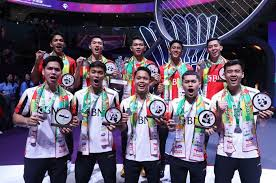

Harapan PBSI Usai Thomas & Uber Cup 2024 Menjelang Olimpiade 2024
Kamis, 07 September 2023 18:10 WIB
PBSI berharap para atletnya tetap menjaga semangat dan daya juang, serta berlatih lebih keras menjelang Olimpiade 2024, setelah hasil di Thomas-Uber 2024.
Seperti yang diketahui, tim Thomas dan tim Uber Indonesia sama-sama menjadi runner-up dalam kejuaraan beregu putra dan putri tersebut.
Tim Uber Indonesia melebihi target semifinal dengan berhasil mencapai partai puncak. Sejak 2008, baru kali ini lagi tim putri Indonesia mampu mencapai final Uber Cup.
Sementara tim putra Indonesia gagal mencapai target juara. Namun, setidaknya tim Thomas Indonesia telah mampu mencapai final dalam tiga edisi terakhir Thomas Cup -- termasuk menjadi juara pada tahun 2020.
Hasil-hasil ini menjadi bekal bagi para atlet Merah Putih, terutama untuk persiapan menuju Olimpiade 2024 di Paris bulan Juli mendatang. Seperti yang diketahui, Thomas-Uber Cup menawarkan poin ranking yang besar, juga sebagai upaya untuk mengukur kekuatan Indonesia dengan pesaing-pesaing dari negara lain seperti Denmark, Taiwan, China, dan Korea.
Indonesia telah berhasil meloloskan enam wakil ke Olimpiade 2024, yaitu tunggal putra Anthony Sinisuka Ginting dan Jonatan Christie, tunggal putri Gregoria Mariska Tunjung, ganda putra Fajar Alfian/Muhammad Rian Ardianto, ganda putri Apriyani Rahayu/Siti Fadia Silva Ramadhanti, dan ganda campuran Rinov Rivaldy/Pitha Haningtyas Mentari.
'Mudah-mudahan ke depan, jika ada target besar untuk Olimpiade, tidak ada yang tidak mungkin,' kata Kabid Binpres PBSI Ricky Soebagdja kepada wartawan.
'Dengan persiapan atau sisa waktu yang ada ini juga, persiapan untuk menuju Olimpiade ini lebih lagi semangat juangnya, latihan yang lebih keras lagi, ini yang kami harapkan,' ujarnya.
Jadi Bekal para Junior di Turnamen Besar
PBSI tidak
hanya mengirim pemain senior dalam Thomas dan Uber Cup,
tapi juga ada pemain-pemain junior. Gabungan antara senior
dan junior yang paling terlihat dalam sektor putri. Selain
Apri/Fadia dan Gregoria, PBSI mengandalkan Ester Nurumi
Tri Wardoyo, Komang Ayu Cahya Dewi, dan Ruzana.
Kemudian, ada ganda putri Rachel Allessya Rose/Meilysa Trias Puspitasari. Sedangkan di sektor putra, ada Alwi Farhan. Alwi yang akan berusia 19 tahun pada 12 Mei mendatang turun sebagai tunggal ketiga saat Indonesia mengalahkan Inggris dengan skor telak 5-0.
'Ada catatan juga bagaimana di tim Thomas dan Uber di-mix. Artinya, pemain yang bisa dibilang senior dan junior, karena ada beberapa pemain yang baru juga ikut dalam tim, atau kejuaraan beregu Thomas atau Uber, tapi mereka sudah menunjukkan penampilan yang begitu luar biasa. Ini saya sekali lagi apresiasi yang setinggi-tingginya,' ucap Ricky.
'Untuk itu, saya ucapkan sekali lagi terima kasih kepada para pemain, pendukung semua, juga kepada media, semua inilah yang kami capai di Tomas Cup dan Uber Cup 2024 ini. Tim Uber dan Tim Thomas memang sebagai pemenang nomor 2, tapi menurut saya mereka tetap juara karena perjuangan mereka yang begitu luar biasa,' kata Ricky.